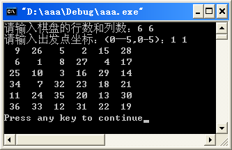
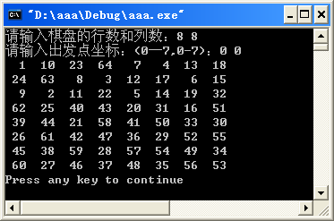

原文连接:https://www.cnblogs.com/cs-whut/p/11153529.html
在国际象棋的棋盘（8行×8列）上放置一个马，按照“马走日字”的规则，马要遍历棋盘，即到达棋盘上的每一格，并且每格只到达一次。例如，下图给出了骑士从坐标（1,5）出发，游历棋盘的一种可能情况。

【例1】骑士游历问题。
编写一个程序，对于给定的起始位置（x0,y0），探索出一条路径，沿着这条路径骑士能遍历棋盘上的所有单元格。
（1）编程思路。
采用深度优先搜索进行路径的探索。深度优先搜索用递归描述的一般框架为：
void dfs(int deep) // 对deep层进行搜索
{
if (符合某种要求||已经不能再搜了)
{
按要求进行一些处理，一般为输出;
return ;
}
if (符合某种条件且有地方可以继续搜索的) // 这里可能会有多种情况，可能要循环什么的
{
vis[x][y]=1; // 表示结点(x，y)已访问到
dfs(deep+1); // 搜索下一层
vis[x][y]=0; // 改回来，表示结点(x，y)以后可能被访问
}
}
定义数组int vis[10][10]记录骑士走到的步数，vis[x][y]=num表示骑士从起点开始走到坐标为（x,y）的格子用了num步（设起点的步数为1）。初始时vis数组元素的值全部为0。
（2）源程序。#include <stdio.h>
#include <stdlib.h>
int N,M;
int vis[10][10]={0};
// 定义马走的8个方向
int dir_x[8] = {-1,-2,-2,-1,1,2,2,1};
int dir_y[8] = {2,1,-1,-2,-2,-1,1,2};
void print()
{
int i,j;
for(i=0; i<N; i++)
{
for(j=0; j<M; j++)
printf("%3d ",vis[i][j]);
printf("\n");
}
}
void DFS(int cur_x,int cur_y,int step)
{
if(step==N*M+1 )
{
print();
exit(1);
}
int next_x,next_y;
for(int i=0; i<8; i++)
{
next_x = cur_x+dir_x[i];
next_y = cur_y+dir_y[i];
if (next_x<0 || next_x>=N || next_y<0 || next_y>=M || vis[next_x][next_y]!=0)
continue;
vis[next_x][next_y] = step;
DFS(next_x,next_y,step+1);
vis[next_x][next_y] = 0;
}
}
int main()
{
printf("请输入棋盘的行数和列数(均小于10)：");
scanf("%d %d",&N,&M);
printf("请输入出发点坐标：(0—%d,0-%d)：",N-1,M-1);
int x0,y0;
scanf("%d%d",&x0,&y0);
vis[x0][y0] = 1;
DFS(x0,y0,2);
return 0;
}
（3）运行效果。
 
【例2】A Knight's Journey（POJ 2488）
Description
Background
The knight is getting bored of seeing the same black and white squares again and again and has decided to make a journey around the world. Whenever a knight moves, it is two squares in one direction and one square perpendicular to this. The world of a knight is the chessboard he is living on. Our knight lives on a chessboard that has a smaller area than a regular 8 * 8 board, but it is still rectangular. Can you help this adventurous knight to make travel plans?
Problem
Find a path such that the knight visits every square once. The knight can start and end on any square of the board.
Input
The input begins with a positive integer n in the first line. The following lines contain n test cases. Each test case consists of a single line with two positive integers p and q, such that 1 <= p * q <= 26. This represents a p * q chessboard, where p describes how many different square numbers 1, . . . , p exist, q describes how many different square letters exist. These are the first q letters of the Latin alphabet: A, . . .
Output
The output for every scenario begins with a line containing "Scenario #i:", where i is the number of the scenario starting at 1. Then print a single line containing the lexicographically first path that visits all squares of the chessboard with knight moves followed by an empty line. The path should be given on a single line by concatenating the names of the visited squares. Each square name consists of a capital letter followed by a number.
If no such path exist, you should output impossible on a single line.
Sample Input
3
1 1
2 3
4 3
Sample Output
Scenario #1:
A1
Scenario #2:
impossible
Scenario #3:
A1B3C1A2B4C2A3B1C3A4B2C4
（1）编程思路。
同样用深度优先搜索。但由于题目要输出字典序最小的，所以遍历时8个方向的偏移组合顺序为：{-2,-1}, {-2,1}, {-1,-2}, {-1,2}, {1,-2}, {1,2}, {2,-1}, {2,1}。
（2）源程序。
#include<stdio.h>
int dir_x[8] = {-2,-2,-1,-1, 1, 1, 2, 2};
int dir_y[8] = {-1, 1,-2, 2,-2, 2,-1, 1};
int vis[27][27];
int len,x,y;
bool flag;
struct Node
{
int x,y;
}node[1000];
void DFS(int cur_x,int cur_y)
{
if(len==x*y)
{
flag=true;
return ;
}
for(int i=0; i<8; i++)
{
int next_x=cur_x+dir_x[i];
int next_y=cur_y+dir_y[i];
if(next_x>0 && next_x<=x && next_y>0 && next_y<=y && vis[next_x][next_y]!=1)
{
node[len].x=next_x;
node[len].y=next_y;
vis[next_x][next_y]=1;
++len;
DFS(next_x,next_y);
if(len==x*y)
{
flag=true;
return ;
}
--len;
vis[next_x][next_y]=0;
}
}
}
int main()
{
int nCase;
int n,i,j;
scanf("%d",&nCase);
for(n=1; n<=nCase; n++)
{
flag=false;
len=0;
for (i=0;i<27;i++)
for (j=0;j<27;j++)
vis[i][j]=0;
node[0].x=1;
node[0].y=1;
vis[1][1]=1;
scanf("%d%d",&y,&x);
++len;
DFS(1,1);
printf("Scenario #%d:\n",n);
if(flag==false)
{
printf("impossible\n\n");
continue;
}
for(i=0; i<len; i++)
{
printf("%c%d",(node[i].x-1)+'A',node[i].y);
}
printf("\n\n");
}
return 0;
}